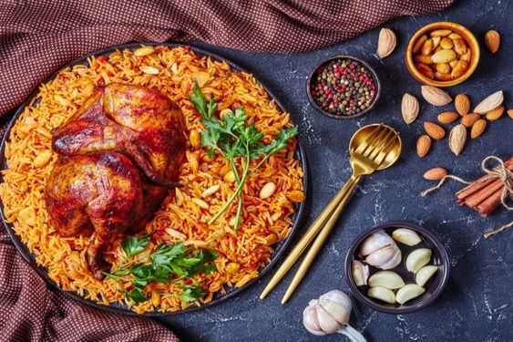

مكونات وصفة البانيه:
- كيلو صدور دجاج
- دقيق
- بقسماك
- كوب زبادي
- بصلة مقطعة قطع صغيرة
- بيضة
- معلقة ثوم بودرة

مكونات وصفة الحواوشي:
- 6 أرغفة خبز دقيق القمح الكامل
- 900 غرام من اللحم المفروم
- بصلة كبيرة مقطعة
- حبة فليفلة خضراء
- قرن فلفل حار (اختياري)
- 3 ملاعق كبيرة من معجون الطماطم
- 14 غرام من البقدونس المفروم
- 2 فص من الثوم
- ملعقة صغيرة من الملح
مكونات وصفة المكرونة بالبشاميل:
- 375 غرام من المعكرونة
- 2 ملعقة كبيرة من الزيت النباتي
- 1 بصل كبير
- 300 غرام من لحم البقر المفروم
- 750 مل من الحليب
- مغلف بشاميل بطعم الجبنة
- 1 كوب من جبنة الموتزاريلا
مكونات وصفة الكشري:
- ½ كيلوغرام أرز أبيض
- ½ كيلوغرام مكرونة سباجيتي
- ½ كيلوغرام مكرونة صغيرة
- ¼ كيلوغرام عدس أسمر
- ½ كيلوغرام حمص
- 1 كيلوغرام طماطم
- ½ كيلوغرام بصل
- شعيرية
- 1½ كوب زيت
- ثوم
- ملح
- كمون ناعم
مكونات وصفة الشاورما السوري:
- 1 كيلو صدور دجاج
- كوب زيت
- كوب زبادي
- 2 ملعقة كبيرة عصير ليمون
- 2 ملعقة كبيرة خل
- ملعقة كبيرة برش ليمون
- ملعقة كبيرة صلصة طماطم
- توابل متنوعة (كمون، كزبرة، بابريكا، كركم)

مكونات وصفة الكبسة:
- 1/4 كوب زبدة
- كيلو ونصف دجاج
- 4 أكواب ماء ساخن
- كوبان ونصف أرز بسمتي
- توابل الكبسة (زعفران، قرفة، بهارات)
- زبيب ولوز للتزيين